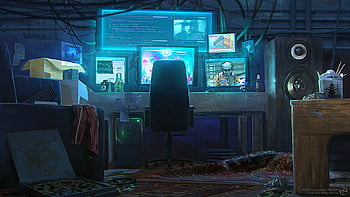
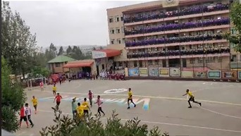
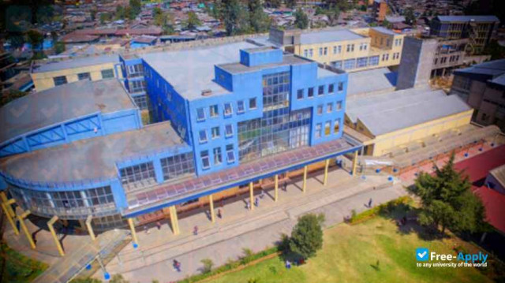

Growing up
Being the last child for my mother, I got much love from her being raised up. I have 3 brothers 5 sisters. We used to live around piassa. Most of my time in my childhood, I used to play soccer very much that once I became a candidate for the Dream FC of Addis Ababa city. I've had a ton of friends with different values and talents. One of my friend guided me to the world of computers, how they work, how to do cool stuff with them, what priveleges were available as an admin...and many more. After finding the opportunity to know about them, I dedicated most of my time delving in to the world of computers. The side image shows my reading place when i was a teenager.
Education
Bashewam is like my home, carriying me from grade 1 up to finishing my preparatory. The schol won many awards from the local sub-city in quality of education, beauty of the school, volunteer activities and mamy more. There were many social clubs in the school to know our selves in what field were we good at. I found my self landing at the soccer club at the beginning, but when I entered high school, I joined the IT club. I was so close to my IT teacher and found it a life changing experience because if i was'nt close to him, I wouldn't have the resources and the roadmap to the field of IT, he guided me like a mentor. The side image depicts Bashewam school.
Campus life
Addis Ababa University was my landing place for the 5 years ahead of me. I joined AAiT after completing freshman course. After 1 year and a half, I joined the school of software engineerig which then I begun to play aroud computers every day. I start writting simple programs, joined A2SV, collaborating with computer science and Information system students, begun consulting people about laptops and mobile phones, put my hands on the things I can possibily do in Technology...and many more. When I became a 4th year student, I joined the cybersecurity stream and at the mean time begun working online, freelancing. Finally, I graduated with cumulative grade of 3.5 and got my first job in INSA(Information Network security Agency). And now here I am, living a blessed life. The side picture shows AAiT.
